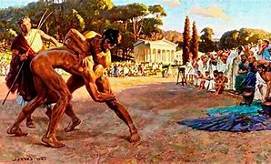
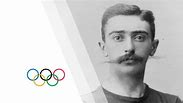

Ancient Olympics (776 BC - 393 AD)
The first Olympic Games were held in Olympia, Greece, in 776 BC. Athletes competed for glory and honor in events like running, wrestling, and chariot racing.
The first Olympic Games were held in Olympia, Greece, in 776 BC. Athletes competed for glory and honor in events like running, wrestling, and chariot racing.
The modern Olympic Games were revived in 1896 in Athens, Greece, by Pierre de Coubertin. The first Games featured 13 countries and 43 events.
This era saw the Games grow in size and scope, with the introduction of new sports and the participation of more nations, highlighted by the 1936 Berlin Olympics.

Post-World War II, the Olympics symbolized hope and recovery. The 1960 Rome Olympics were the first to be televised, increasing global visibility.
The Olympics have continued to evolve, with the introduction of new sports, technology, and the focus on inclusivity and sustainability in the Games.
The Olympic Games date back to ancient Greece, with the first recorded event held in 776 BC at Olympia. These games celebrated athletic prowess, religious observances, and cultural exchange among the city-states of Greece. Athletes competed in various disciplines, including running, wrestling, and chariot racing, which showcased their strength and skills. The games were held every four years, a tradition that influenced the modern Olympic cycle. Over time, the Olympics evolved, and after the fall of the Roman Empire, they faded into obscurity. The revival in the late 19th century marked a significant turning point, leading to the establishment of the modern Olympic movement that we know today.
The revival of the Olympic Games in the modern era is attributed to Pierre de Coubertin, a French educator and historian. Inspired by the ancient Olympic tradition, he sought to promote international understanding through sports. Coubertin organized the first modern Olympics in Athens in 1896, featuring athletes from 13 countries. His vision emphasized the importance of physical education and competition, fostering a spirit of friendship and peace. Coubertin's efforts laid the foundation for the Olympic movement, and his motto, "Citius, Altius, Fortius" (Faster, Higher, Stronger), continues to inspire athletes worldwide.
